|
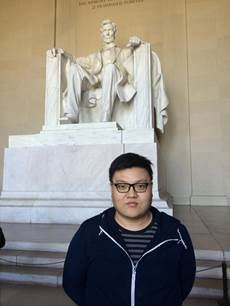 |
Zheng Wang
I am currently a Ph.D student, supervised by Prof. Ruimin Hu, at National Engineering Research Center for Multimedia Software (NERCMS), School of Computer, Wuhan University. My research interests focus on person re-identification and instance search. I won the Best Paper Award at the 15th Pacific-Rim Conference on Multimedia (PCM 2014).
wangzwhu AT gmail.com
My CV, updated in 2017.06.22. |
News
[2017.06.22] I regret that the paper '3A: A Person Re-identification System via Attribute Augmentation and Aggregation' accepted by ICASSP2017, will not be published, because of travel schedule mismatch and no-show in the right time.
[2017.05.10] I released some collected Re-id Resources.
[2017.04.22] I was awarded as the outstanding graduates.
Selected Papers
|
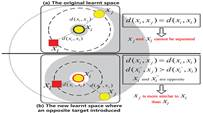 |
TAICHI Distance for Person Re-identification Zheng Wang, Ruimin Hu, Yi Yu, Chao Liang, Chen Chen ICASSP, 2017, PPT |
|
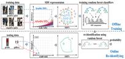 |
Scale-adaptive Low-resolution Person Re-identification via Learning A Discriminating Surface Zheng Wang, Ruimin Hu, Yi Yu, Junjun Jiang, Chao Liang, Jinqiao Wang |
|
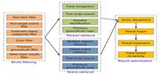 |
WHU-NERCMS at TRECVID2016: Instance Search Task Zheng Wang et al. TRECVID Workshop, 2016, PPT, MAP=0.758, our system is considered to be unique, interesting, clever, and ultimately informative. |
|
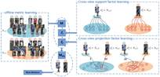 |
Zero-shot Person Re-identification via Cross-view Consistency Zheng Wang, Ruimin Hu, Chao Liang, Yi Yu, Junjun Jiang, Mang Ye, Jun Chen, Qingming Leng |
|
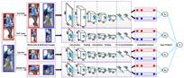 |
DeepList: Learning Deep Features with Adaptive Listwise Constraint for Person Re-identification Jin Wang, Zheng Wang, Changxin Gao, Nong Sang, Rui Huang IEEE Transactions on Circuits and Systems for Video Technology, 2016, Code |
|
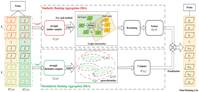 |
Person Re-identification via Ranking Aggregation of Similarity Pulling and Dissimilarity Pushing Mang Ye, Chao Liang, Yi Yu, Zheng Wang, Qingming Leng, Chunxia Xiao, Jun Chen, Ruimin Hu IEEE Transactions on Multimedia, 2016, Code |
|
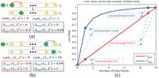 |
Similarity Learning with Top-heavy Ranking Loss for Person Re-identification Jin Wang, Nong Sang, Zheng Wang, Changxin Gao IEEE Signal Processing Letters, 2016, Code |
|
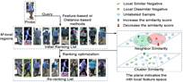 |
Multi-Level Fusion for Person Re-identification with Incomplete Marks Zheng Wang, Ruimin Hu, Yi Yu, Chao Liang, Wenxin Huang ACM MM, 2015, Poster |
|
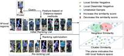 |
Region-based Interactive Ranking Optimization For Person Re-identification Zheng Wang, Ruimin Hu, Chao Liang, Qingming Leng, Kaimin Sun |
|
|
SRLSP: A Face Image Super-Resolution Algorithm Using Smooth Regression with Local Structure Prior Junjun Jiang, Chen Chen, Jiayi Ma, Zheng Wang, Zhongyuan Wang, Ruimin Hu IEEE Transactions on Multimedia, 2017, Code |
|
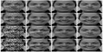 |
Noise Robust Face Image Super-Resolution Through Smooth Sparse Representation Junjun Jiang, Jiayi Ma, Chen Chen, Xinwei Jiang, Zheng Wang IEEE Transactions on Cybernetics, 2016, Code |

Collaborators
Chao Liang, Wuhan University
Junjun Jiang, China University of Geosciences
Mang Ye, Hong Kong Baptist University
Jin Wang, Huazhong University of Science and Technology
Yi Yu, National Institute of Informatics, Japan
Jinqiao Wang, Institute of Automation, Chinese Academy of Sciences
Chen Chen, University of Central Florida